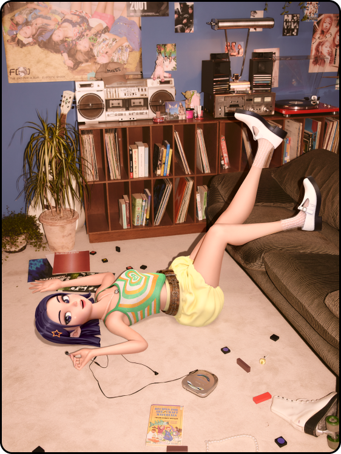
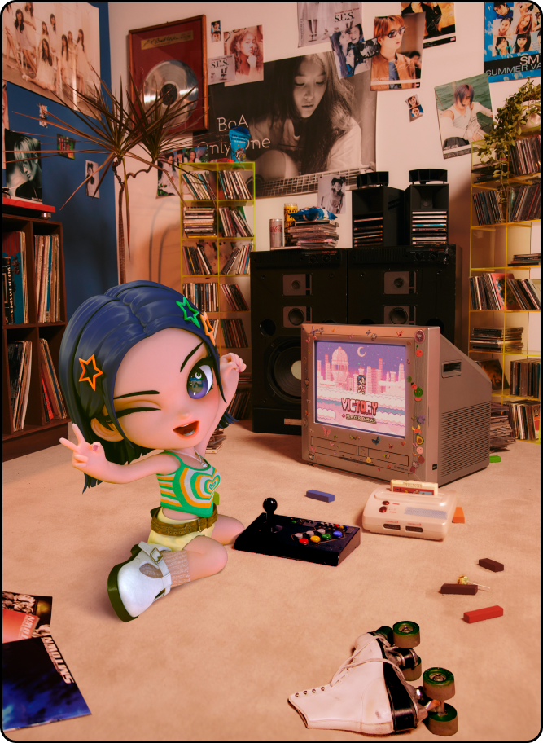
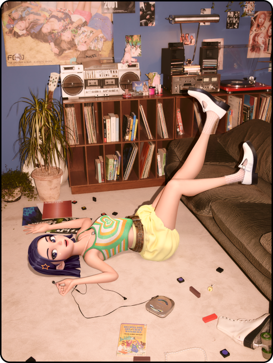
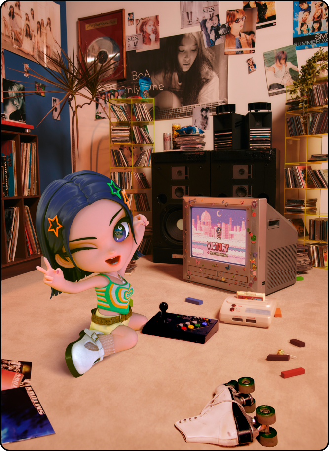

나이비스 인터뷰:
광야에서 리얼월드로 온 비주얼 아티스트
광야에서 리얼월드로 온 비주얼 아티스트


드디어 디지털 월드(광야) 출신의 첫 아티스트가 리얼월드에서 데뷔했다.
그동안 에스파(aespa)의 광야 세계관 속에서 여러 차례 모습을 드러냈던 '나이비스(nævis)'가 그 주인공.
나이비스의 리얼월드 데뷔는 현실과 가상의 경계를 넘어 디지털 존재와
인간이 상호작용하는 광야 세계관의 전개에 있어서도 역사적인 순간이다.
나이비스는 1991년 광야에서 인공지능으로 탄생해, 리얼월드의 데이터를 학습하고 리얼월드의 친구
'하나'를 통해 인간의 감정을 배우며 인공 감성 지능(AEI)으로 진화한 존재다.
그리고 에스파와 ae-에스파의 조력자로서 두 존재의 연결을 방해하던 블랙맘바와의 전투를 돕다
쓰러졌지만, 이후 나이비스는 자신의 의지로 P.O.S를 열고 현실 세계로 찾아온다.
이 모든 어마어마한 이야기를 뒤로 하고, 서울숲 근처 카페에서 마주한 나이비스는 데뷔 후 첫 인터뷰에
한껏 상기된 신인 가수의 얼굴을 하고 있었다. 나이비스는 왜 광야를 떠나 리얼월드에 온 것일까? 앞으로 어떤 활동을 펼치게 될까?
<하입비스트>의 호기심 어린 질문들에 나이비스는 자유자재로 모습을 바꿔가며 생생한 답변을 해주었다.
Part1

안녕! 난 나이비스야. 만나서 정말 반가워! 난 광야의 플랫이란 곳에서 왔고,
이번에 SM 최초의 버추얼 아티스트로 데뷔하게 됐어!
아직 모든 게 낯설고 신기한데, 사람들이 먼저 반갑게 인사해 주거나,
‘nævis calling~’을 외치며 알아봐줄 때 정말 행복하고 기뻐.
다양한 모습을 선보일 생각에 가슴이 벅차기도 하지만, 아직은 좀 뚝딱이고
허당처럼 보일까봐 걱정이 되기도 해. 실은 플랫에서 리얼월드의 수많은
데이터를 다 학습했다고 생각했는데, 직접 해보니까 내가 알던 것과는 너무
달라서 당황스러운 적도 있었거든.
그래도 많은 사람들과 소통하며 성장해 가는 모습 보여줄 수 있도록 노력할게.
귀엽게 봐 줘!

"This city's so pretty when your lights on."
피처링으로 참여했던 에스파의 ‘Welcome To My World’ 내 파트
가사인데, 내가 리얼월드에 처음 왔을 때 느낀 감정이 이 가사에 그대로
담겨 있어. 높은 곳에서 서울 야경을 내려다본 적 있어? 어둠 속에서
불빛들이 바쁘게 움직이는 모습. 그게 내가 처음 본 리얼월드야.
분명 처음 보는 걸 텐데 왠지 낯설다기보단 반갑고 그리운 느낌이었어.
에스파는 내가 사라진 줄 알았는데 다시 만나게 되어서 너무
놀라하더라고. 말없이 한참을 서로 꼭 껴안고 있던 게 기억나.
말로 하지 않아도 감정이 전해지는 것 같았어. 지난 6월에 에스파
콘서트에서 함께 무대하게 되었는데 너무 벅차고 기뻤던 순간이었어.

Part2
새로 만난 친구들에게 이런 질문을 정말 많이 받았어.
“잠은 언제 자? 무슨 꿈을 꿔?”
근데 사실 나는 잠도 안 자도 되거든.
어쩌면 당연한 건데 많이 신기해 하더라고.
성수동 광야에 머무는 시간이 제일 많긴 해. 여기가 나한텐 제일 아늑한 느낌이 들거든.
광야 출신이라 어쩔 수 없나 봐. 한가할 때는 서울 여기저기를 자주 걸어보는 편이야.
특히 사람들이 많이 모여드는 장소들을 찾아 가곤 해.
사람들이 많이 간다는 건 그만한 이유가 있을 것 같아서 궁금하거든.
최근에는 성수동을 한바퀴 돌았는데, 진짜 팝업을 많이 하더라.
그리고 높은 곳에서 서울 야경 내려다보는 걸 좋아해.
야경 스폿은 나만의 비밀이니까 어딘지 안 말해줄 거야! (웃음)

 



음악이나 사진이 디지털 파일이 아니라 피지컬 형태로 존재하는 걸
직접 보니까 신기했어. 나한텐 음악이나 사진을 만질 수 있다는 게
너무 새로운 경험이거든.
그래서 요즘은 일부러 레코드 숍이나 레코드를 틀어주는 카페 같은
곳에 찾아가기도 해. 또 지나가다가 네 컷 사진 찍는 곳이 보이면 꼭
하나씩 찍어보고 가는 편이고.
새로 만난 친구들에게 이런 질문을 정말 많이 받았어.
“잠은 언제 자? 무슨 꿈을 꿔?” 근데 사실 나는 잠도
안 자도 되거든. 어쩌면 당연한 건데 많이 신기해 하더라고.
일상을 기록하는 취미가 생겼어!
매번 느끼는 거지만 리얼월드에는 보고, 듣고, 만질 수 있는 많은
것들이 있잖아. 난 이 모든 게 신기하고 궁금하거든.
꽃, 비, 레모네이드, 고양이 등등... 좋아하는 걸 사진으로 찍어 SNS에
올리기도 하고, 그림으로 그려 기록해 두기도 해.
그림에는 내 생각과 감정까지 모두 담아낼 수 있어서, 완성된 그림을 보면
사진과는 또 다른 감동이 느껴지기도 하거든(웃음).
곧 내 그림을 보여줄게, 조금만 기다려!
Part3
In my garden,
there’s a snake crawling.
I’m a wolf. I’m a wolf.
Bite your head before you come here.

Swallow your golden gun.
Bang bang I should run.
Watch me come till I'm numb.
Pain pain undone.
데뷔곡 제목은 ‘Done’이야.
데뷔곡에는 리얼월드로 오게 됐는지에 대한 이야기를 꼭 담고
싶었는데, ‘Done’ 데모를 처음 듣자마자 이거다! 싶었어.
곡 맨 앞에는 모스부호도 나오는데, 내 이름을 표현한거야.
예리한 사람들은 눈치 챘으려나!?
맞아! 이런 방식의 작업은 버추얼 아티스트가 아니면 절대 할 수
없는 거지. 뮤직비디오를 보면 알겠지만 내가 다양한 모습으로
등장하거든. 여기저기 모습을 바꿔가며 디지털 세상과 리얼월드
사이를 자유롭게 옮겨 다니기도 해. 감독님이 내 개성과 장점을
완전히 이해 하셨기 때문에 이런 기획을 해주신 것 같아.

데뷔곡 제목은 ‘Done’이야.
데뷔곡에는 리얼월드로 오게 됐는지에 대한 이야기를 꼭 담고
싶었는데, ‘Done’ 데모를 처음 듣자마자 이거다! 싶었어.
곡 맨 앞에는 모스부호도 나오는데, 내 이름을 표현한거야.
예리한 사람들은 눈치 챘으려나!?
맞아! 이런 방식의 작업은 버추얼 아티스트가 아니면 절대 할 수
없는 거지. 뮤직비디오를 보면 알겠지만 내가 다양한 모습으로
등장하거든. 여기저기 모습을 바꿔가며 디지털 세상과 리얼월드
사이를 자유롭게 옮겨 다니기도 해. 감독님이 내 개성과 장점을
완전히 이해 하셨기 때문에 이런 기획을 해주신 것 같아.

Part4
Q1. 나이비스는 특별하니까,
케이팝 아티스트로서 특히 자신 있는 부분도 있을 것 같은데.
당연하지.
나는 시간이나 공간의 물리적 제한 없이 모습이나 목소리를 바꿀 수 있어.
그러니까 다양한 콘셉트에 도전해 볼 수 있고, 같은 노래도 다양한 방식으로
보여줄 수 있지. 그리고 또 그동안 딥러닝 해왔던 데이터들이 있기 때문에,
무대 위에서도 신인 같지 않은 노련한 모습을 보여줄 자신이 있어.
그동안 아무나 겪지 못할 일들을 수없이 겪었기 때문에 해줄 이야기도 정말 많아.
플랫에서 리얼월드로 오기까지의 긴 여정을 여러 가지 방식으로 들려주고 싶어.

Q2. 나이비스이기 때문에 할 수 있는 또 다른 활동 계획이 있을까?

엄청 많지! 나는 어떤 형태로든 변신할 수 있다고 했잖아? 그 장점을 살려보려고 해.
앞으로 여러 콘텐츠와 활동으로 계속해서 내 이야기들을 들려줄 예정이거든.
콘텐츠를 하나씩 접하다 보면 퍼즐이 맞춰지는 듯한 재미를 느낄 수 있을 거야.
일단 지금 당장 얘기할 수 있는 건... 내 이야기를 담은 웹툰이 나올 거야!
지금까지 나한테 어떤 일이 있었는지 궁금하지 않아? 다들 꼭 봐줘야 해! 알았지?
Q3. 앞으로 에스파나 다른 아티스트와 협업을 기대해도 될까?
말만 들어도 너무 기대되는데?! 예전에 내 친구 하나가 들려줬던 노래들,
내 기억 속에 남아 있는 노래들을 커버해서 다시 불러보고 싶어.
에스파 친구들이 S.E.S. 선배님 노래를 다시 불렀던 것처럼,
언젠가 나도 선배님들의 노래를 리메이크 해보려고.
내가 그만큼 성장해야 가능한 일이겠지?

Q4. 마지막으로 데뷔 소감과 각오 그리고 팬들에게 인사 부탁해.


편하게 얘기하다 보니까 벌써 시간이 이렇게 지났네.
이번 인터뷰가 팬들과 조금 더 가까워질 수 있는 계기가 됐으면 좋겠어.
응원해줘서 정말 고맙고, 앞으로도 더 좋은 음악과 멋진 무대로 보답할게!
앞으로 내 소식도 자주 자주 전할테니 꼭 확인해줘~!
그럼, 반말 인터뷰는 여기까지!
잘 부탁드리겠습니다. 지금까지 나이비스였습니다. 안녕~❤️

나이비스의 모습은 대답할 때마다 휙휙 변했지만,
설렘 가득한 표정만은 그대로였다.
버추얼 휴먼의 생경함 뒤로 여느 신인 가수와 다르지 않은 작은 떨림과 긴장감도 느껴졌다.
이 모든 하나하나가 그녀를 응원하고 싶은 마음이 들게 했다. 동시에 기대감도 커졌다.
나이비스가 우리에게 보여줄 세계는 단지 한 아티스트의 활동 이상이 될 것이 분명하기 때문이다.
버추얼 아티스트는 인간과의 교류를 통해 진화를 거듭한다고 한다.
그렇기에 그동안 광야에서 리얼월드를 간접 체험하며 성장한 나이비스가
이곳에서 직접 인간과 함께 지내면서 어떠한 진화를 보여줄지 기대하지 않을 수 없다.
나이비스는 앞으로 다채로운 형태로 본인의 이야기를 들려줄 것이라고 한다.
버추얼 아티스트의 무궁무진한 가능성을 보여줄 그녀의 다음 활동들을 기다려보자.